lecture #14
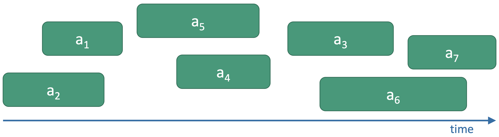
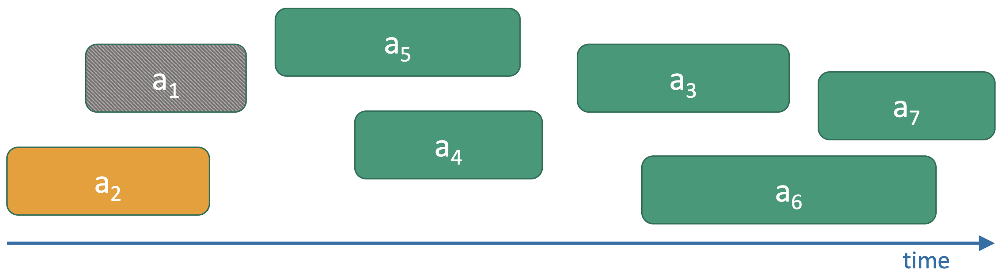
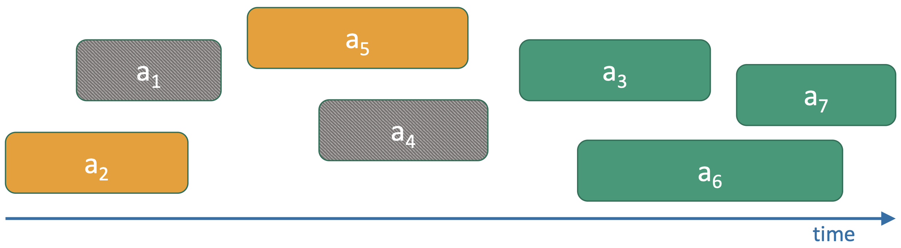
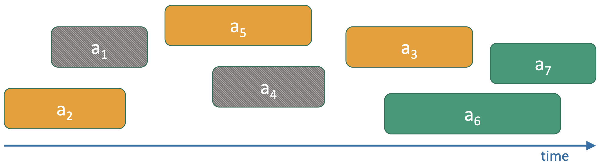
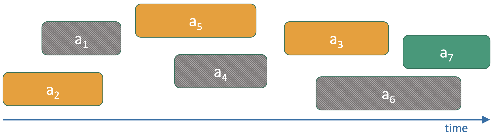
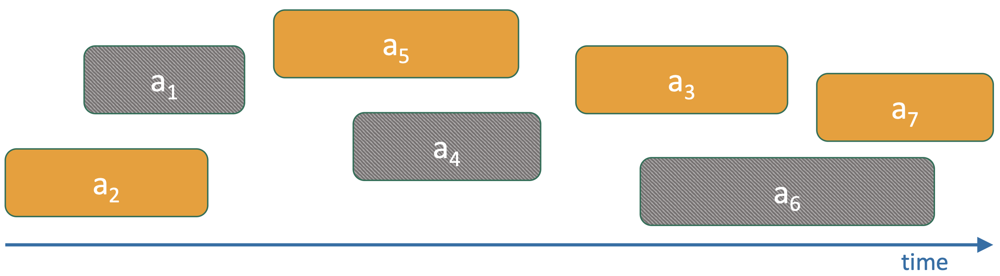
Input: A = [a1..an], starts S = [s1..sn], finishes F = [f1..fn]
Output: C = maximum-size set of non-overlapping activities
Sort activities by increasing F (break ties arbitrarily)
C = [A[1]]
last = 1
for i = 2..n:
if S[i] ≥ F[last]:
append A[i] to C
last = i
return C
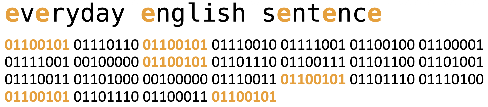
ASCII encoding assigns 8 bits to each character. However some characters appear often (such as e).
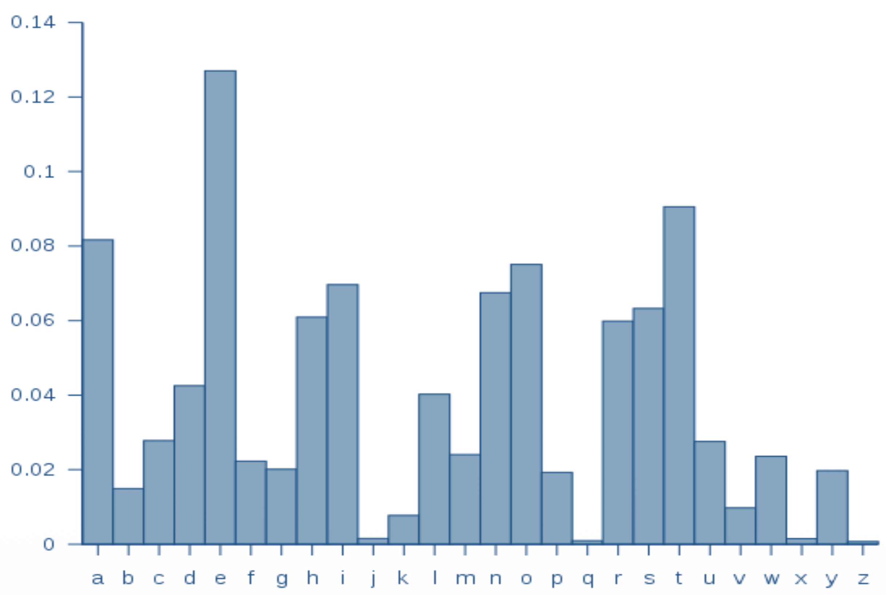
character frequency distribution in English text
Fixed-width encodings (e.g., 8-bit ASCII) are wasteful when character frequencies are skewed.
Goal: assign shorter codewords to frequent symbols and longer ones to rare symbols to minimize expected length.
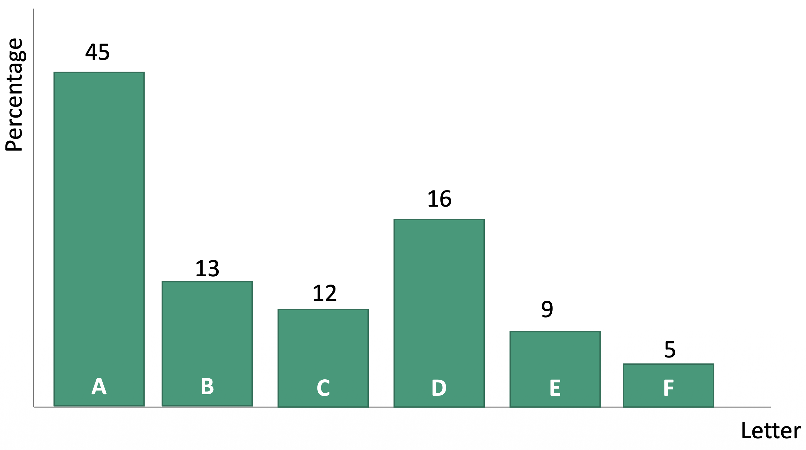
simplified example
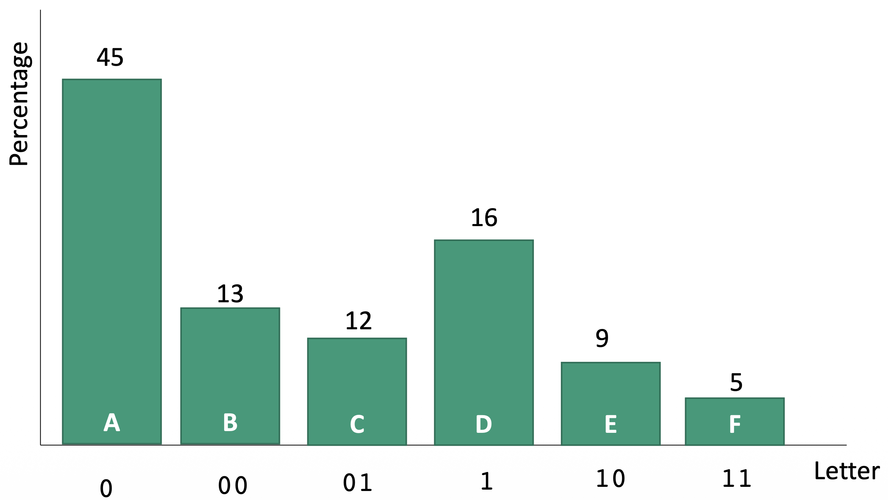
first attempt
ambiguous!
000 could be AAA/AB/BA
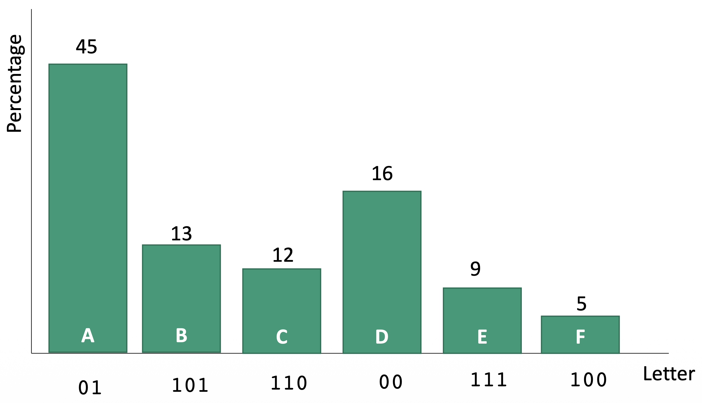
this works!
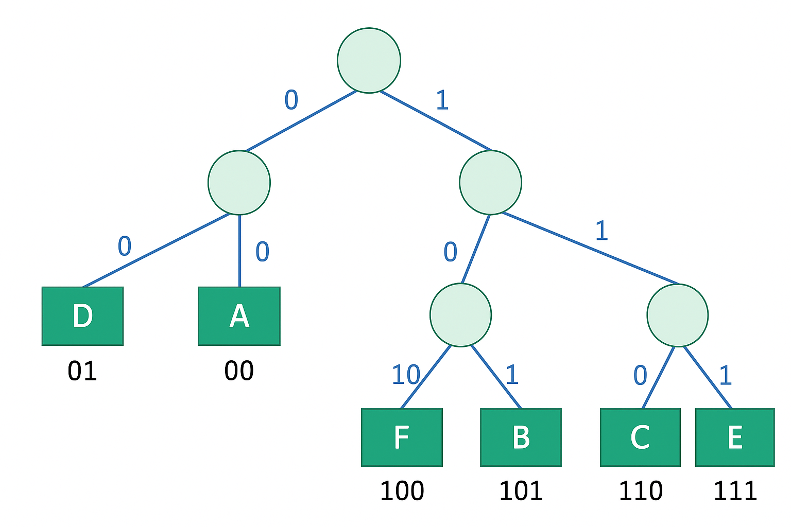
as long as all letters are leaves the code is prefix-free
greedily build subtrees, starting with the infrequent letters
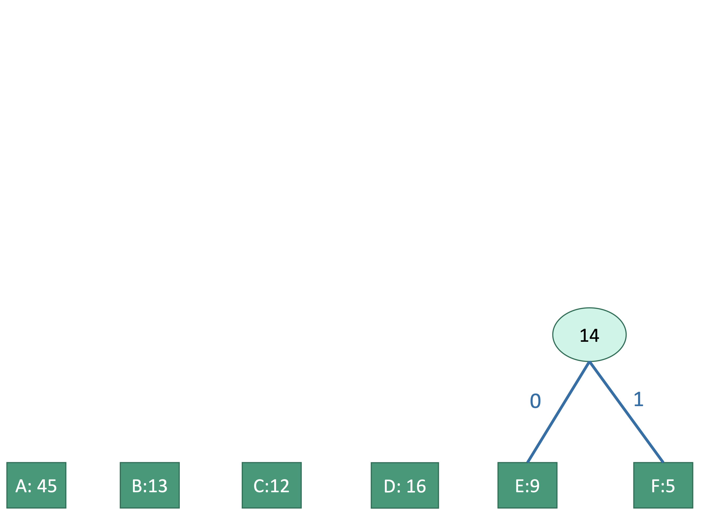
Merge the two smallest frequencies \(5\) and \(9\) to form \(14\).
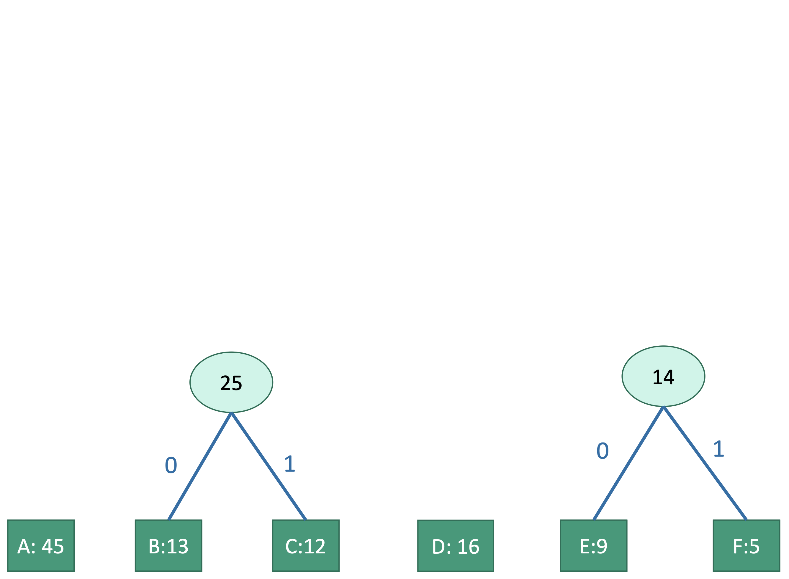
Merge the next two smallest \(12\) and \(13\) to form \(25\).
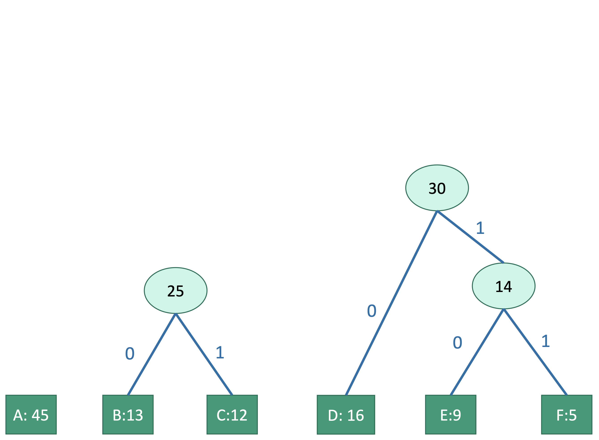
Merge \(14\) and \(16\) to form \(30\).
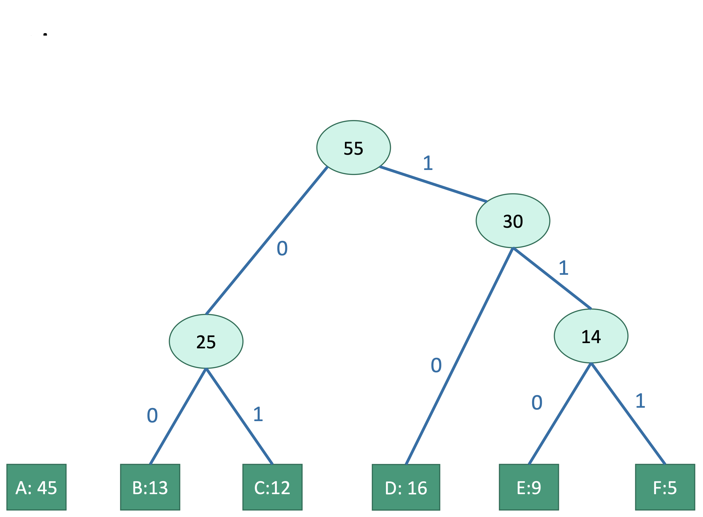
Merge \(25\) and \(30\) to form \(55\).
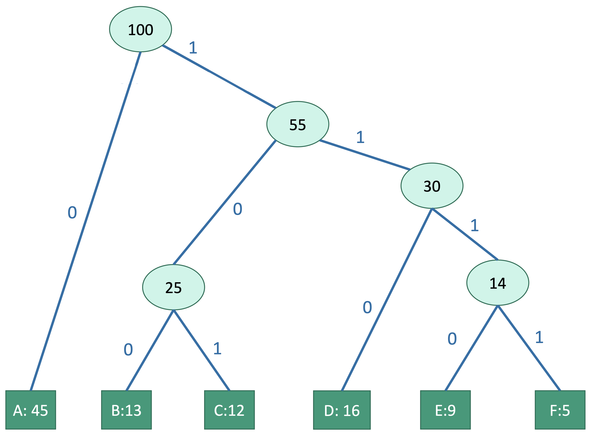
Merge \(55\) and \(45\) to obtain the root \(100\); read codewords from root to leaves.
The expected bits per symbol is
\[ \mathbb{E}[L] \;=\; \sum_{c \in C} p(c)\,\ell(c), \]
where \(p(c)\) is the symbol probability and \(\ell(c)\) is its codeword length (tree depth).
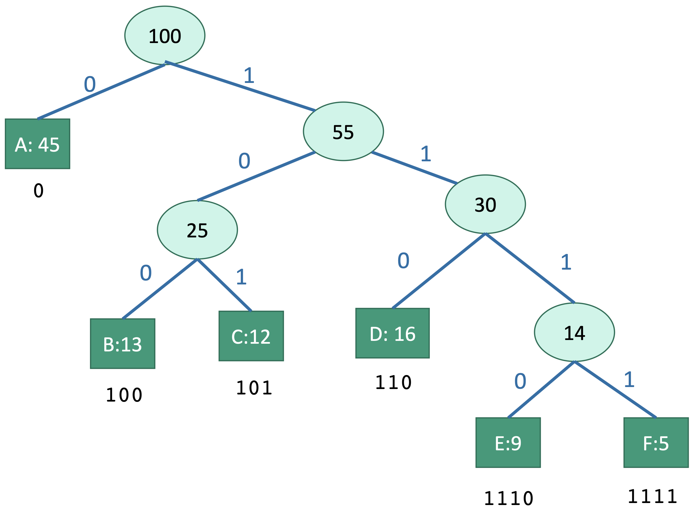
expected cost of encoding a letter:
$$ 1*0.45 + \\ 3*0.41 + \\ 4*0.14 = \\ 2.24 $$
# C: symbols with frequencies
Q = PriorityQueue(C, key = freq)
while Q.size() > 1:
x = Q.extract_min()
y = Q.extract_min()
z = new InternalNode()
z.left = x; z.right = y
z.freq = x.freq + y.freq
Q.insert(z)
root = Q.extract_min()
return root